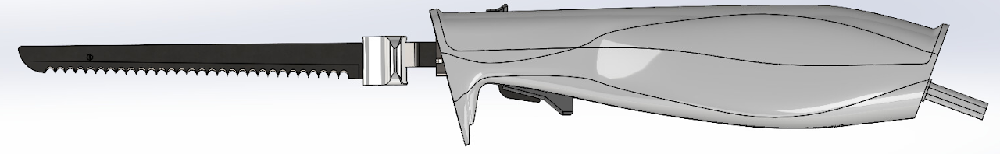
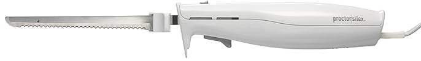
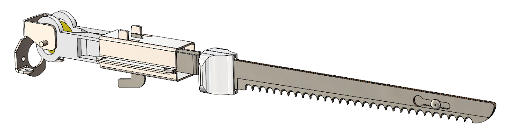
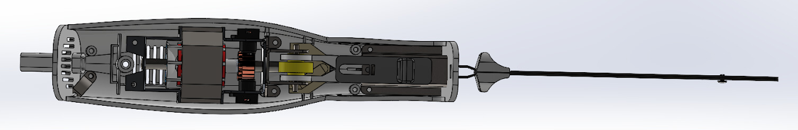
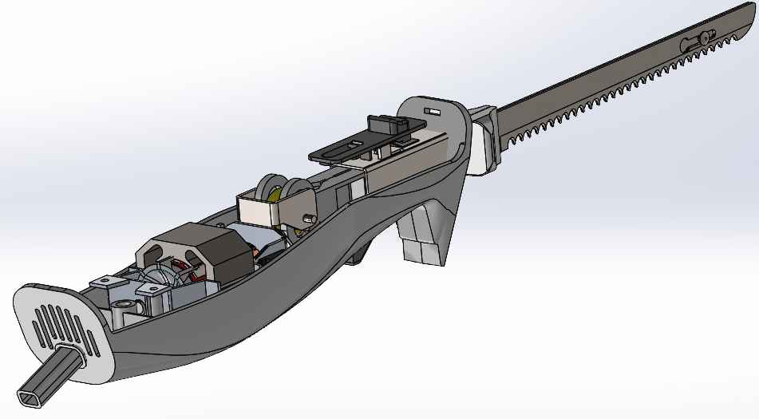

Electric Knife Teardown and Modeling


One of the projects in my 'Engineering Design I' class (sophomore year) was to work in a group of three to take a commercial product (the Proctor Silex Easy Slice Electric Knife) and break it down into its individual components and then model those components and rebuild the knife virtually using SolidWorks CAD software. Above you can see an image of the model of the knife that my group made (top) and the actual commercial product (bottom).
In order to accelerate the modeling process, my group broke the part up into three subassemblies - the motor, blade, and case subassemblies. I worked on the blade subassembly - below is an image of the blade subassembly that I created:

And here's what the blade subassembly looks like when its assembled with the other subassemblies (the top of the case is hidden to allow you to see the inside of the electric blade):

